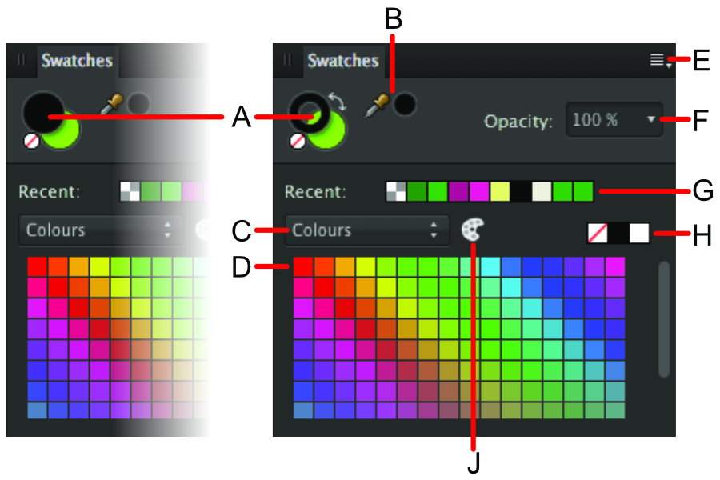

Панель Образцы облегчает применение предварительно определенных цветов, а также определение, хранение и повторное использование пользовательского набора цветов.
О панели «Образцы»
На панели Образцы сохраняются недавно использованные пользователем цвета; панель обеспечивает доступ к целому ряду предварительно определенных палитр, каждая из которых содержит образцы сплошной или градиентной заливки. Можно выбирать образцы, которые будут использоваться с различными инструментами и применяться непосредственно к объектам. Можно создавать и сохранять собственные образцы в виде пользовательских палитр цветов для документа, приложения или всей системы, а также импортировать любые палитры Affinity в формате .afpalette, экспортированные другими пользователями, или импортировать палитры Adobe Swatch Exchange (ASE).
Кроме получения доступа к палитре, пользователи могут создавать глобальные и плашечные цвета, а также цвета для печати поверх содержимого. Можно также настроить приводочный цвет.

Панель «Образцы». A: селекторы цвета 1 или цвета 2 (слева) или цвета обводки или заливки с образцом цвета «Нет» и стрелкой «Поменять местами»; B: инструмент «Пипетка» и выбранный образец цвета; C: список категорий (слева — приложения, справа — документа); D: образцы палитры цветов в категории; E: инструмент поиска; F: установки панели; G: элемент управления непрозрачностью; H: недавно использованные цвета; I: образцы «Нет», «Черный», «Средний серый» и «Белый»; J: параметр «Добавить текущий цвет в палитру в виде глобального цвета»; K: параметр «Добавить текущую заливку в палитру»; L: приводочный цвет; M: глобальный цвет; N: цвет печати поверх; O: плашечный цвет.
Маркировочные знаки, позволяющие различать профильные образцы цветов: A: глобальный цвет; B: цвет печати поверх; C: плашечный цвет.
Как и в случае с панелью Цвет, внешний вид панели «Образцы» меняется в зависимости от активного режима и выбранного инструмента. Большие селекторы цветов указывают на текущие выбранные цвета.
На панели «Образцы» также отображаются образцы «Нет», «Черный», «Средний серый» и «Белый», а также недавно использованные цвета и элемент управления непрозрачностью. Образцы располагаются в палитрах цветов по категориям.
Селекторы образцов цвета
В режиме «Рисование» объекты имеют свойства обводки и заливки. Цвет обводки представлен в виде селектора образца с цветным контуром (пример «А» ниже). Цвет заливки представлен в виде селектора образца, закрашенного сплошным цветом (пример «B» ниже).
Ниже представлены образцы, отображаемые для векторных и пиксельных инструментов.
Выбранный селектор образца находится на переднем плане. На этой иллюстрации выбранный селектор образца цвета соответствует: A: обводке; B: заливке; C: цвету переднего плана (цвет 1); D: цвету фона (цвет 2).
Работа с палитрами
На палитру автоматически добавляются десять последних недавно использованных цветов (временно). Наиболее часто используемые пользовательские цвета и градиенты можно на постоянной основе сохранить в любой палитре, а также создавать пользовательские палитры для их хранения.
В программе Affinity Designer доступны указанные ниже категории палитр.
Документ: эти палитры сохраняются в текущем документе.
Приложение: эти палитры сохраняются в Affinity Designer. Эти палитры можно использовать для любого документа Affinity Designer.
Система: эти палитры сохраняются в операционной системе. Эти палитры можно использовать в Affinity Designer и других приложениях, установленных в системе.
PANTONE®: эти палитры основаны на цветах PANTONE®. Эти палитры можно использовать для любого документа Affinity Designer.
Сохранение и удаление пользовательских палитр цветов
Для создания новой палитры выполните перечисленные далее действия.
Нажмите «Установки панели» и выберите параметр Добавить палитру.
Для сохранения цвета или градиента в палитру выполните перечисленные далее действия.
На панели Образцы выберите палитру во всплывающем меню палитры.
Выполните одно из перечисленных ниже действий.
Удерживая , нажмите объект, а затем во всплывающем меню нажмите Добавить в образцы и выберите источник добавления цвета: заливка, обводка или заливка и обводка.
Выберите пункт Добавить текущий цвет в палитру. Используйте селектор цвета обводки или заливки для применения цвета.
Для редактирования сохраненного образца выполните перечисленные далее действия.
Дважды нажмите сохраненный образец.
Для удаления сохраненного образца выполните перечисленные далее действия.
Удерживая , нажмите образец, который необходимо удалить, и выберите во всплывающем меню Удалить заливку.
Создание палитры из документа
Можно создать палитру из цветов, использованных в документе.
Для создания палитры из документа выполните перечисленные далее действия.
Нажмите «Установки панели» и выберите параметр Создать палитру из документа.
Будет создана новая палитра (с названием документа), в которой будут представлены все цвета активного документа.
Общий доступ к пользовательским палитрам
Также можно предоставить общий доступ к пользовательским палитрам цветов, с которыми смогут работать другие пользователи Affinity.
Для экспорта палитры цветов выполните перечисленные далее действия.
Во всплывающем меню палитры выберите палитру, которую необходимо экспортировать.
Нажмите «Установки панели» и выберите в меню пункт Экспортировать палитру.
Введите имя экспортируемого файла, выберите местоположение на диске для его сохранения и нажмите Сохранить.
Для импорта палитры цветов выполните перечисленные далее действия.
Нажмите «Установки панели» и выберите тип палитры в подменю Импортировать палитру.
Найдите необходимый для импорта файл и нажмите Открыть.
Недавно импортированная палитра теперь будет доступна для выбора во всплывающем меню палитры.
Установка палитр по умолчанию
Любая палитра может быть установлена в качестве палитры по умолчанию для определенных цветовых форматов. Например, для документов RGB/8 можно установить палитру по умолчанию, которая бы отличалась от палитры, используемой для документов CMYK/8.
Для того чтобы установить палитру по умолчанию, выполните перечисленные далее действия.
На панели Образцы выберите палитру во всплывающем меню палитры.
Нажмите «Установки панели» и выберите вариант цветового формата во всплывающем меню Установить по умолчанию для.